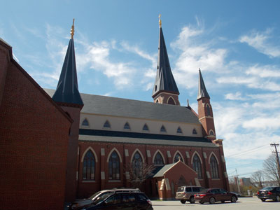
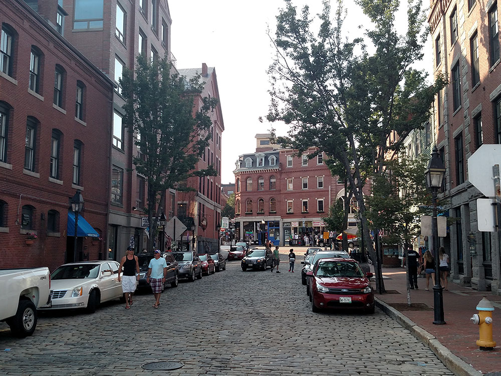
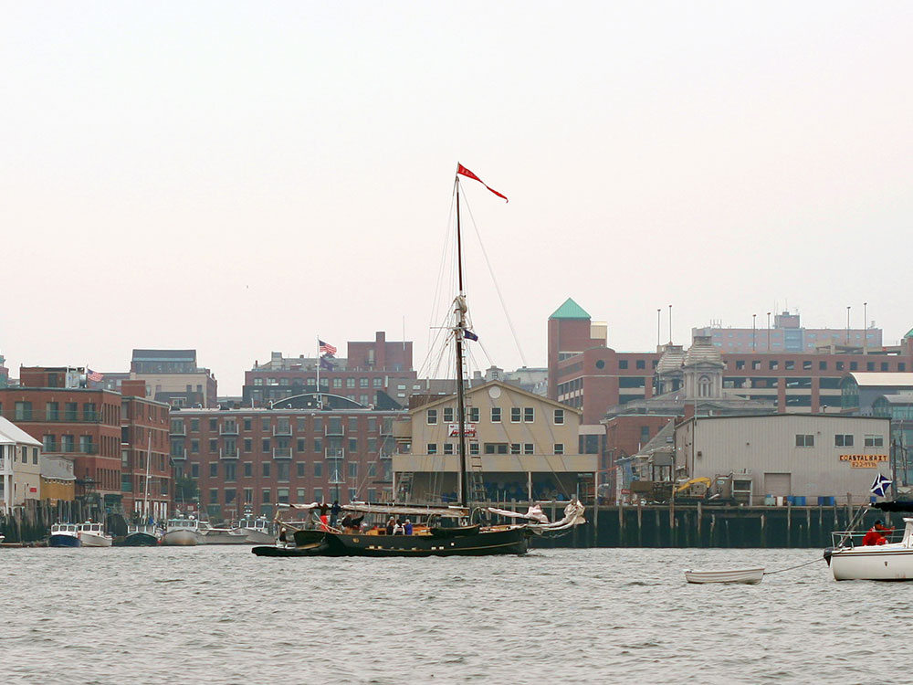

Most populous city in the state of Maine, known for its 19th-century architecture and nightlife
General Information
From Boston (107 miles): Follow Cambridge St, William Cardinal O'Connell Way and Blossom St to MA-3 S/Charles St. Continue to US-1 N. Take the I-93 N/US-1 N exit from MA-3 S/Charles St. on I-95 N in Peabody. Follow I-95 N to Franklin St in Portland. Take exit 7 from I-295 N. Continue on Franklin St. Drive to Congress St.
Overview
Portland is the largest city in Maine, a working port on Casco Bay on the state's southern coast, and it is known for its cobblestone Old Port, its fresh seafood, its craft breweries, and its lighthouses. Despite its modest size, the city has a thriving food scene, with James Beard Award-winning chefs and an emphasis on local lobster, oysters, and farm-to-table dining. It is also the gateway to the Casco Bay islands and the rocky shores of coastal Maine.
Visitors come to Portland for the Old Port, with its brick buildings and fishing wharves, for the Portland Museum of Art, and for the Victoria Mansion. They also come for the Portland Observatory, the Eastern Promenade, ferries to Peaks Island, and Portland Head Light in nearby Cape Elizabeth.
History
The Wabanaki people lived on the Portland peninsula, which the English settled in 1632 as Casco, later Falmouth. The town was burned by the French and Native Americans in 1690, and by the British navy in 1775, and was renamed Portland in 1786. It served as the first capital of Maine when the state separated from Massachusetts in 1820, and it prospered as a seaport. On July 4, 1866, a fire started by a firecracker destroyed much of the city, burning 1,800 buildings, and the city was rebuilt in the Victorian brick style that survives in the Old Port. Henry Wadsworth Longfellow, born in Portland in 1807, is its most famous native son.
Sightseeing and Popular Landmarks
The Old Port has cobblestone streets and restored warehouses with shops, restaurants, and bars, and the working waterfront is home to lobster boats and a fish exchange. The Portland Observatory, built in 1807, is the last surviving maritime signal tower in the country and has views of the harbor, and the Eastern Promenade is a hilltop park with views of Casco Bay. Fort Allen Park, the U.S. Custom House, and the Cathedral of the Immaculate Conception are other landmarks.
Culture and Museums
The Portland Museum of Art has a collection of American art, with works by Winslow Homer, Edward Hopper, and Andrew Wyeth, and the Victoria Mansion is a fully preserved 1860 Italianate house with painted interiors. The Wadsworth-Longfellow House, the childhood home of the poet, and the Maine Narrow Gauge Railroad Museum are other attractions. The First Friday Art Walk, the Portland Symphony Orchestra, and live music venues keep the arts scene active.
Parks
Portland has several parks along the water. The Eastern Promenade has a trail that circles the peninsula, and Back Cove has a 3.5-mile path popular with walkers and runners. Peaks Island, a 20-minute ferry ride away, has beaches and bike trails, and Cape Elizabeth's Fort Williams Park, with Portland Head Light, is a short drive. Casco Bay has more than 200 islands for kayaking and boat tours.
Seasons and Weather
Portland has a humid continental climate. Summers are comfortable, with highs in the upper 70s°F, and winters are cold and snowy, with highs in the 30s°F and about 65 inches of snow. Summer and early fall are the busiest seasons, and nor'easters can bring heavy snow in winter. Fog is common along the coast.
This article uses material from Wikipedia as well as information from official tourism and institutional sources. Key references include Visit Portland Maine, Portland Museum of Art, Victoria Mansion, Maine Office of Tourism, and National Weather Service Gray. Wikipedia material is from the article "Portland, Maine", and is available under the Creative Commons Attribution-Share-Alike License 3.0.
Featured Locations and Trails

Farragutful, CC BY-SA 4.0, via Wikimedia Commons; Image Size Adjusted

Cathedral of the Immaculate Conception
Historic Gothic Revival cathedral in Portland, Maine, built in 1866-69, is the tallest building in Portland and the third tallest in Maine
Farragutful, CC BY-SA 4.0, via Wikimedia Commons; Image Size Adjusted
Eastern Promenade
Waterfront green space featuring walking and biking paths, open lawns, memorials, historic fortifications, and sweeping views of Casco Bay and its islands.
Farragutful, CC BY-SA 4.0, via Wikimedia Commons; Image Size Adjusted
Fort Allen Park
Historic waterfront park featuring Civil War-era earthworks, monuments, walking paths, open lawns, and panoramic views across Casco Bay and Portland Harbor.
Farragutful, CC BY-SA 4.0, via Wikimedia Commons; Image Size Adjusted
Old Port
Historic brick warehouses, cobblestone streets, working waterfront piers, boutiques, restaurants, galleries, and ferry terminals create one of New England's most vibrant maritime districts.
Farragutful, CC BY-SA 4.0, via Wikimedia Commons; Image Size Adjusted
Peaks Island
Scenic island community known for sandy beaches, waterfront trails, historic sites, ferry access, and panoramic views of Casco Bay and the Portland skyline.
Farragutful, CC BY-SA 4.0, via Wikimedia Commons; Image Size Adjusted
Portland Museum of Art
Leading fine arts institution featuring American, European, and contemporary works displayed in architecturally significant galleries overlooking Portland’s historic downtown and waterfront.
Farragutful, CC BY-SA 4.0, via Wikimedia Commons; Image Size Adjusted
Portland Observatory
Historic octagonal tower museum offering panoramic views of the harbor, islands, waterfront, and city skyline from the last remaining maritime signal station of its kind in the United States.
Daderot, Public domain, via Wikimedia Commons; Image Size Adjusted

United States Custom House
Historic custom house in downtown Portland, Maine, was built from 1867-1872 to house offices of the United States Customs Service
Staib at English Wikipedia, CC BY-SA 3.0, via Wikimedia Commons; Image Size Adjusted

Victoria Mansion
Landmark example of American residential architecture with brownstone exterior, elaborate interior design, opulent furnishings and early technological conveniences


